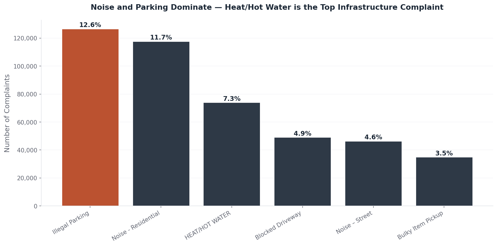
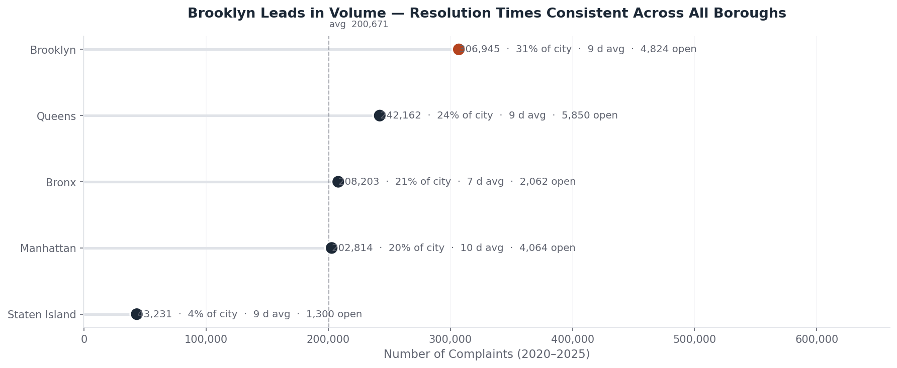
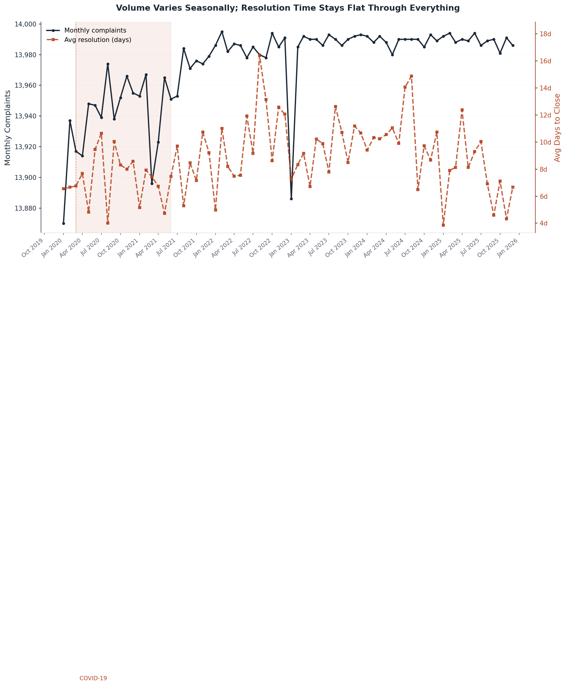

DTU 02806 · Social Data Analysis & Visualization · Final Project (Part B)
Over one million service requests filed between 2020 and 2025 reveal a city where noise and parking dominate the daily complaint log — yet heating failures in aging buildings remain the most consequential infrastructure challenge for residents who can least afford them.
Data: NYC 311 Service Requests · 2020–2025 · 1,008,000 records analyzed (stratified monthly sample, ~5% of all calls)
The Dataset
Service requests analyzed — a stratified monthly sample representing roughly 5% of all NYC 311 calls filed 2020–2025.
Distinct complaint types, from illegal parking and noise to heating failures, water damage, and rodent infestations.
Six years spanning COVID-19 lockdowns, a post-pandemic rebound, and record-breaking heat seasons.
At 2 AM on a January night in the Bronx, a tenant discovers the heat has been off for six hours. They dial 311. That call — logged, timestamped, and routed to the appropriate city agency — becomes a data point. Multiply it across one million records spanning five boroughs and six years, and the result is something no engineer's survey could produce at this scale: a crowdsourced audit of New York's daily urban life.[1]
What makes this dataset analytically powerful is its four core fields: Complaint Type, Borough, Created Date, and Days to Close. Together they make it possible to ask not just what New Yorkers complain about, but where, when, and — critically — whether the city responds with equal urgency everywhere.
One caveat before proceeding: 311 data reflects what residents choose to report. Communities with low institutional trust, or tenants who fear landlord retaliation, systematically under-report. Every count that follows is a lower bound on reality. The absence of a complaint is not evidence of the absence of a problem.
Figure 1 · What Bothers New Yorkers
The top three single complaint categories are Illegal Parking (12.6%), Noise - Residential (11.7%), and HEAT/HOT WATER (7.3%). But the full picture is starker: counting every noise subcategory together — residential, street, commercial, vehicle — noise accounts for 22.4% of all calls. Add parking-related complaints and those two quality-of-life categories alone drive nearly 40% of the citywide caseload. State-level analysis of the full NYC 311 dataset confirms noise and illegal parking rank first citywide in raw volume, a finding our million-record sample mirrors directly.[2]
Distribution of 311 Complaint Types (2020–2025)

Noise complaints — the largest single category in aggregate — are concentrated in evening and nighttime hours and peak sharply in summer, when warmer temperatures push residents outdoors and open windows carry sound. Illegal parking and blocked-driveway complaints follow a different logic: they reflect a city of 8.3 million people sharing infrastructure designed for a fraction of today's vehicle fleet. Together, these quality-of-life complaints swamp the volume of infrastructure failures.
Despite ranking third overall, HEAT/HOT WATER is the highest-volume complaint category that reflects a clear infrastructure failure rather than a lifestyle conflict. Heating failures are not a comfort issue — in New York winters, they are a public-health emergency. The Housing Maintenance Code requires landlords to maintain indoor temperatures of at least 68°F during the day and 62°F at night between October and May. When they fail, residents call 311. NYC Comptroller data shows heat-and-hot-water complaints have grown 17% over recent years as aging building systems accumulate more thermal stress.[4]
Figure 2 · Where It Concentrates
Raw complaint volume varies across NYC's five boroughs, but volume alone is a poor guide to need. Manhattan's high count partially reflects its extraordinary population density — the highest of any land area in the country. Understanding geographic patterns requires looking at three views: total volume, the composition of complaints, and where within the city those complaints physically cluster.
Complaint Volume by Borough (2020–2025)

The interactive chart below disaggregates the three dominant complaint types — heat, water, and rodents — across boroughs, revealing which infrastructure challenges are geographically concentrated rather than uniformly distributed. Borough complaint profiles vary more broadly than infrastructure alone: in Staten Island, illegal parking ranked first in 2025 with 13.3% of local 311 calls — more than double the next complaint type — reflecting the borough's status as NYC's most car-dependent area.[3]
Heat, Water & Rodent Complaints by Borough — Interactive
The map below anchors those complaint counts to NYC's five official borough boundaries. Use the dropdown to switch between total volume, heat-complaint concentration, and average resolution time — each view reveals a different dimension of how infrastructure stress is distributed across the city. Hover any borough to see its exact figures.
NYC 311 Complaints by Borough — Interactive Choropleth
The geographic patterns trace the history of urban development in New York. The Bronx's and Manhattan's elevated HEAT/HOT WATER complaint rates reflect decades of documented disinvestment and the concentration of pre-war housing stock. Staten Island's parking dominance reflects its distinct built environment: the only borough where car ownership approaches universality and public transit remains limited.[3]
Figure 3 · When It Peaks
Complaint timing follows the rhythm of the city's climate — but perhaps not as you'd expect. The dominant seasonal pattern is a summer peak, not a winter one. June through August averages 17% more complaints than December through February, driven by noise complaints that surge when warmer temperatures push residents outdoors and open windows. The COVID-19 lockdown left a visible imprint in April 2020 — the lowest single month in the entire six-year dataset — before volumes rebounded quickly. Both patterns carry implications for how the city should staff and allocate its enforcement resources.
Monthly Complaint Volume 2020–2025 — Interactive
The COVID lockdown dip is real but brief: April 2020 dropped to roughly 159,000 complaints citywide — the lowest single month in six years — before rebounding to summer highs of 313,000–348,000 by June–August 2020. The heatmap below reveals a second, overlapping story: while overall volume peaks in summer, HEAT/HOT WATER complaints follow exactly the opposite rhythm, peaking sharply each January and February. These two patterns coexist within the same system. NYC Comptroller data shows heat-and-hot-water complaints averaged 203,920 per year in the 2022–2024 heat seasons — a 17% increase over the 2017–2021 average — confirming that the winter infrastructure signal is not stable but growing.[4]
The aggregate seasonal pattern conceals a more granular story: which complaint types peak in which months. Noise complaints rise in summer; HEAT/HOT WATER spikes in January–February; some categories — like Unsanitary Condition — are elevated year-round. The interactive heatmap below makes these patterns visible year by year — use the slider to compare any year, or hit Play to watch all six years cycle.
When Different Problems Peak: Complaint Types by Month — Interactive
The practical implication is direct: NYC's service calendar should be organized around these patterns. Pre-positioning boiler repair contractors before November, increasing noise-enforcement staffing through the summer months, and prioritizing parking-enforcement resources year-round are not heroic interventions — they are basic demand forecasting applied to municipal services.
Figure 4 · Equity
A fundamental question for urban governance is whether municipal services reach all communities equitably. In a city as economically diverse as New York, one might expect wealthier boroughs to receive faster service and less affluent ones to wait longer. The 311 data produces a clear and somewhat surprising result — and the direction of any disparity is the opposite of what economic sorting would predict.
Monthly Complaint Volume vs. Average Resolution Time (2020–2025)

That consistency holds when you slice by geography. Across all five boroughs, the average days to close a complaint ranges from 7.3 days (Bronx) to 10.0 days (Manhattan) — a spread of just 2.7 days. More strikingly, the Bronx — the borough with the highest poverty rate and the most concentrated aging housing stock — resolves complaints fastest. In a city as economically stratified as New York, this finding runs directly counter to what economic sorting would predict.
The 7.3–10.0 day range indicates that NYC's centralized 311 dispatch logic does not favor wealth over need. Historical research documents geographic service disparities in many American cities, with lower-income neighborhoods receiving slower emergency response and less timely infrastructure maintenance. NYC's standardized routing removes the discretion that enables discrimination in more decentralized service models. More than half of all complaints are closed within the same day they are filed — a median resolution time of 0 days — reflecting how quickly noise and parking complaints (the dominant categories) are typically investigated and closed.
The 9-day average resolution time is itself worth scrutinizing: it is pulled upward by a long tail of complex cases while the median sits at 0 days. HEAT/HOT WATER complaints, which involve HPD inspections and landlord enforcement, carry a longer resolution window than same-day noise or parking closures. Heating failures that violate the Housing Maintenance Code are subject to emergency response provisions requiring action within 24 hours — raising the question of whether the average conceals a wide distribution that includes both same-day responses and multi-month delays. During a nine-day cold snap in early 2025 — when New Yorkers filed more than 30,000 heat-and-hot-water complaints, the highest volume ever recorded — 58% were flagged as administrative duplicates and closed when HPD reached any one tenant in a building, often without inspecting individual apartments.[5]
Conclusion
The charts above trace a coherent arc. NYC's 311 caseload divides into two distinct logics: quality-of-life complaints (noise at 22.4%, parking at 17.5%) that dominate by volume but are typically resolved same-day; and infrastructure failures (HEAT/HOT WATER at 7.3%, plumbing, water system) that are smaller in count but consequential in outcome (Fig 1). Geographic patterns show the Bronx and Manhattan shouldering a disproportionate share of heat complaints relative to their population (Fig 2). Summer drives overall complaint volume — a noise-led phenomenon — while HEAT/HOT WATER peaks sharply in winter (Fig 3). And despite wide economic variation across boroughs, the city resolves complaints in a narrow band of 7.3–10.0 days everywhere, with the Bronx resolving fastest (Fig 4).
The COVID-19 pandemic left a clear but brief imprint: April 2020 was the lowest single month in six years, reflecting the strict lockdown. But volumes rebounded within weeks, and by summer 2020 had reached some of the highest monthly totals in the dataset. The most plausible explanation: noise complaints — which drive the summer peak — actually increased during lockdown as residents spent more time at home, acutely aware of neighbors' noise.
The most important policy implication splits along those two logics. For quality-of-life complaints, the challenge is staffing: summer noise enforcement requires more officers in the field during the hours that generate the most calls. For infrastructure failures, the challenge is capital: addressing NYC's persistent HEAT/HOT WATER burden requires sustained investment in building system modernization, prioritized in the neighborhoods with the oldest stock and the longest history of deferred maintenance. The equity finding offers one reason for cautious optimism: the dispatch system already treats all boroughs fairly. The harder work is ensuring that the underlying conditions also converge.
For the full data analysis pipeline, preprocessing code, and methodological discussion of all seven required sections — including the Segel & Heer (2010) narrative visualization framework applied to this project — see the Explainer Notebook.
Open Explainer Notebook